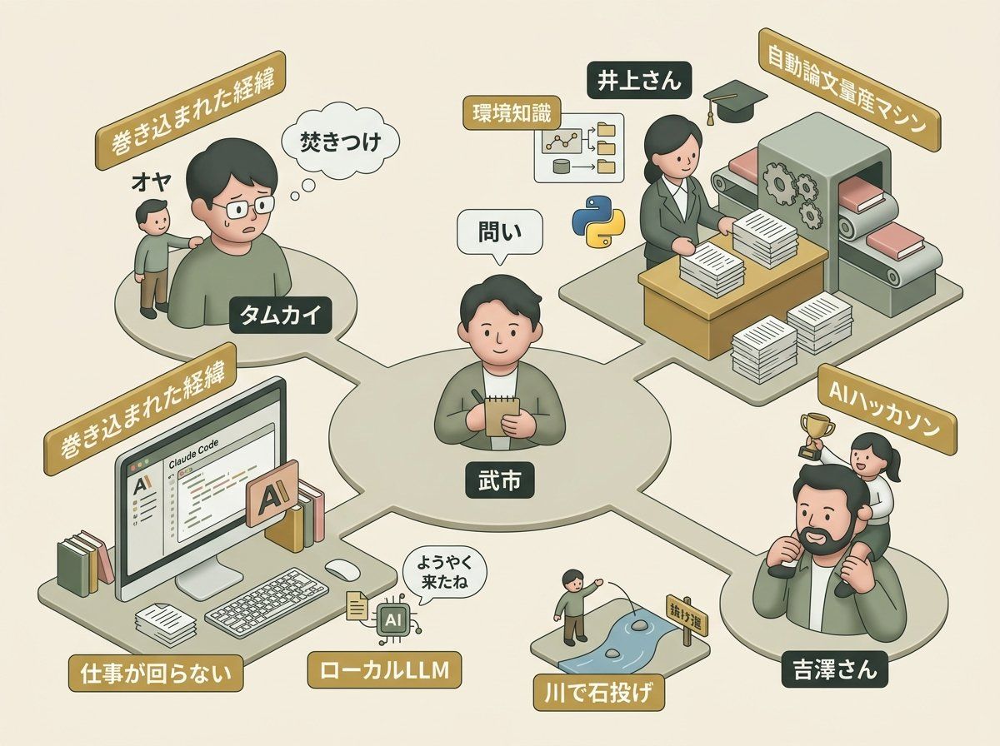
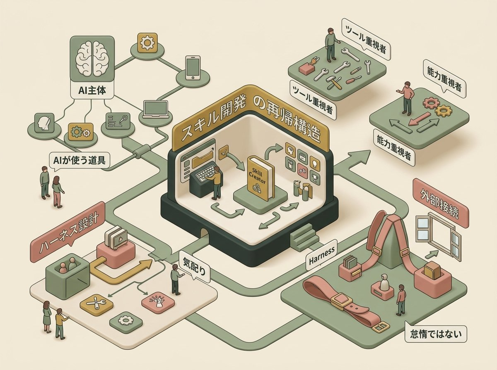
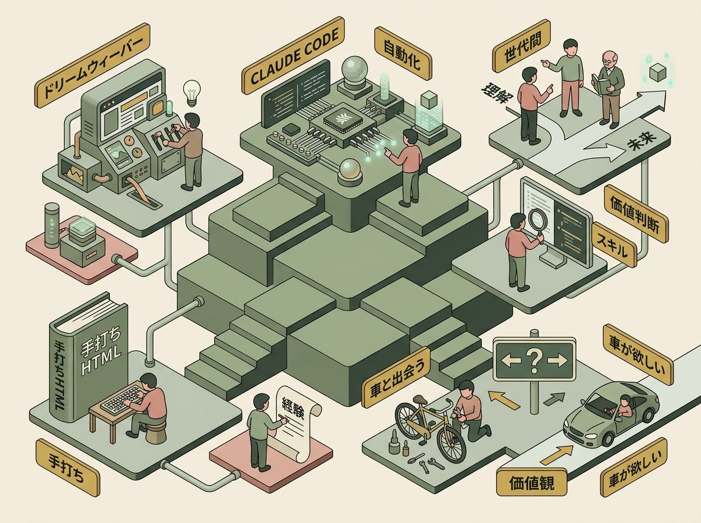
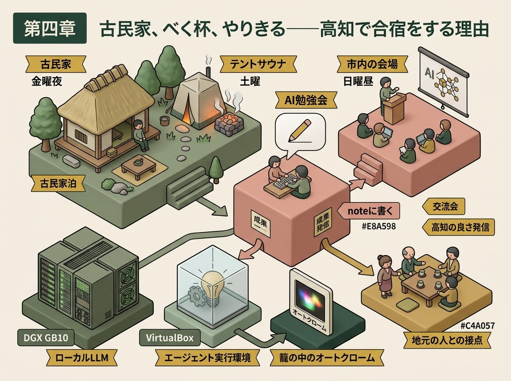
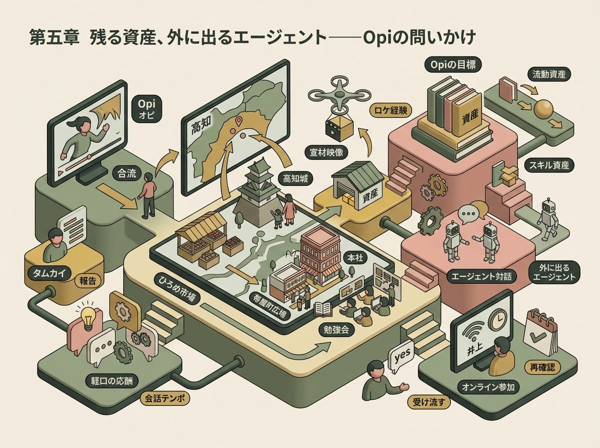

2026年4月17日から20日にかけて、高知で開かれるAI開発合宿。その準備のためのキックオフミーティングが、4月9日の夜、Zoomの画面上に開かれた。呼びかけ人は高知在住の武市さん。集まったのは、タムカイ、経営コンサルタントで大学の博士課程にも在籍する井上さん、中学一年生の娘と一緒にAIハッカソンに出場してきた吉澤さん——通称「パパ」——、そして会食を終えてから画面に合流したOpi（大屋さん）の五人である。井上さんはパートナーの手術の事情で、合宿当日も現地参加は難しく、Zoom越しでの合流が濃厚である。
この夜の会議は、段取り確認の会というよりも、むしろ「それぞれがAIとどう暮らしているか」の現在地を持ち寄る場になった。話題はプログラムの日程からスキルの構造、cronの呼び換え、マニュアル車としてのClaude Code、そしてベく杯と「やりきる文化」へと、意味の糸でつながっていく。本稿では、この対話を時系列ではなく意味のまとまりで再構成し、五人が持ち寄ったそれぞれの現在地と、合宿前夜に浮かび上がった知的な輪郭を描き出す。

武市さんの問いは単純だった。
武市さん
「まずちょっと皆さんが今、AI活用どれぐらいの状況で、まあだいたい僕は知ってるんですけど、改めて確認なんですが。ちょっと今回の目標、どういうことをやっていきたいみたいな。ちょっと自分の中の小さなゴールみたいなのがあれば教えてくださいよ」
会の進行役らしい、穏やかな切り出しである。しかしこの問いが、それぞれの位置を思いがけず浮かび上がらせていく。
最初に口を開いたタムカイの語り出しは、予想を裏切るものだった。
タムカイ
「これ僕、本当に正直に言うと、大屋さんがこれは今、武市さんに会うために高知行くしかねえって言い出して。なんかOpiさんがそういうのがそれしかないですねっていう。ゴールも何も、会食の人(Opi)が一番何かがあったんじゃないかっていうのがまずスタートなのと。そう、で、なんか急になんか人数がめっちゃ増えているっていうのが、僕の本当の基本的な気持ちなので笑」
自分のゴールから語り始めるのではなく、まず「巻き込まれた経緯」から語る。Opiこと大屋さんに焚きつけられ、気がついたら画面の前にいた——そういう語り口である。これは単なる謙遜ではなく、何かを始めるときに「主語が自分であるふりをしない」という一種の誠実さにも見える。
巻き込まれ論から語り始めること
自分のアジェンダを掲げて場に参加するのではなく、誰かの熱意に焚きつけられて辿り着いたという語り口は、一見するとやる気のなさに似ている。しかし実際には、それは場の主導権をめぐる微調整として機能する。
社会学者アーヴィング・ゴッフマンの「フェイス・ワーク(面子の管理)」の議論を借りるなら、「乗せられた側」を自認することで、自分と他者の面子のあいだに空白地帯が生まれる。自分が場を支配しすぎず、かといって場に対して責任を放棄するわけでもない、宙吊りの姿勢である。
この対話の文脈では、タムカイのこの語り出しは、Opiという人物の推進力と自分の合意との両方を同時に肯定する装置として働いている。彼の「急に人数が増えている」という率直な驚きは、合宿という場そのものが「誰かの熱意に乗る人たち」によって成立していることを、暗に祝福している。
タムカイの目標は、実のところClaude Codeの使いこなしではなかった。
タムカイ
「自分の会社にしても、もうなんかあいついねえと仕事が回んねえみたいな状況までは作り込んでるんですけど、まだあの専用マシンを買って、その中で動き回るやつをやってなくて。で、この間、あのGemma 4、あれの話がちょうど出てて、ああいうのをどういうふうに使われるのかみたいなのは、まあ。ローカルLLMはいつか行かないといけないけど、あ、ようやく来たねの空気だったんで、そこかね、なんかもうClaude Codeの使いこなしとか、その辺は大丈夫かなっていう」
「あいついねえと仕事が回らない」という表現に、すでに同居の質感がある。そして「大丈夫かな」という一言に、Claude Codeに対する自負と、ローカルLLMへの「ようやく来たね」という待機感が、短く同居していた。
続いて井上さんが自己紹介をした。経営コンサルで原価管理やデータ分析の現場改善に入っている傍ら、実は大学の博士課程にも在籍する社会人学生である。そして彼はすでに、Claude Codeを論文執筆のほぼ全工程に使いこなしていた。
井上さん
「一番初めの一種を投じるっていうのは、僕のアイデアから始まるんですけど、もう以降はほとんど自動で、そこからいろんな先行研究から引っ張ってきて、掛け合わせて、これやると面白いみたいなアイデアを見つけるところからリサーチ仮説を立てて、シミュレーションを書いて、実行して、論文書いて、自分でレビューして、投稿論文のそのフォーマットに落とし込んで最終化するっていうのは、ほとんどもう自動なんですよ」
井上さん
「シミュレーション系の論文って、もう量産できちゃう時代だなって。これはもう、自分がいない時でも、ずっと回っているシステムを組めてしまえば、もうなんぼでも書けてしまうなと思ってて。で、その自動論文量産マシンみたいなものを、多分作れるなって思ってる」
非エンジニアでPythonをちょろっと書いたことがある程度、と謙遜する口から出てきたのは、「自動論文量産マシン」という言葉だった。合宿での井上さんの狙いは、このシステムを本格的に組むための最新の環境知識を、皆と一緒に最適化することにある。
自動論文量産マシンと研究生産性の民主化
井上さんの「自動論文量産マシン」という言葉は、ある象徴的な段階を指している。シミュレーション系の論文生成——仮説設定から先行研究参照、シミュレーション実装、論文執筆、自己レビュー、投稿フォーマット整形までの全工程——が、2026年の現在、非エンジニアにとっても射程に入ってきたという事実である。
科学哲学者ポール・ファイヤアーベントが『方法への挑戦』で論じたように、研究方法は時代ごとに変容する。その変容はしばしば「書き手の希少性」という前提のうえに成立していた。書き手が少ないからこそ、論文は重かった。しかし書き手が希少でなくなる時、論文の価値はどこへ移るのか。
この対話の文脈では、論文自動化は研究不正の問題系ではなく、「非エンジニアが研究生産性を手に入れる民主化」の事例として語られている。井上さんが自分を「非エンジニア」と自認しながらも「多分作れるな」と語る時、そこには技術的な可能性への確信と同時に、自分の職能の輪郭が書き換わりつつあることへの落ち着いた受け止めがある。
次は「パパ」こと吉澤さんの番だった。「パパ」の由来は、中学一年生の次女と一緒にAIハッカソンに参加し、娘がプレゼンをして受賞したという経緯にある。
吉澤さん
「この間、あのOpenCodeのイベントがあって。で、そこでハッカソンがありましてね、AIハッカソンがあって、僕はあの中学一年生の、えっと次女と一緒に行ってですね、まあ、武市先生にですね、いろいろ教わりながらです。あの中一の子が、あのAIハッカソンでですね、あのプレゼンをするというですね」
今回の合宿にも次女を連れてきたかったが、趣旨がハードめなので見送った。武市さんは「あのずっと川で石投げてるのもありだと思うよ」と返し、会話に短い抜け道を作る。吉澤さんは自身のAI活用については率直だった。
吉澤さん
「僕は多分今、武市さんと井上さんでいくと、まあ、ちょっとまだまだ一番使いこなせてないかなという気がしています。僕は習うより慣れる派だったので、ちょうどMac miniだけ買ってたんですよ。で、Mac mini買っていて。で、よし、買ったぞっつって、あのやろうとして、次の日に武市さんに会ってこんなことやってるんだよっつったら度肝を抜かれ、あ、それはすごいなと思って」
吉澤さん
「見よう見真似で全部ペアプロでやろうとしたら、ちょっとぐちゃぐちゃになって、今ちょっとやっぱ学ぼうっていう、そういう感じですね。会社でえっと、やっぱり使うにはですね、ちょっとやっぱりセキュリティもあるので、クラウドでCoworkを入れていろいろやってたんですけど、やっぱコードの方がいいよみたいな話があって、まあClaude Codeでもちょっとやり始めているところです」
買ったばかりのMac miniで見よう見真似のペアプロに挑んで、ぐちゃぐちゃになった——この失敗談は、AI活用の入口にいる多くの人の追体験になる。
ペアプロ的学習の挫折と「補正機能」の不在
ペアプログラミングは本来、熟練者と学習者が同じ画面を共有しながら相互に補正し合う学習法である。ケント・ベックらが『エクストリーム・プログラミング』で提唱したこの手法は、二人の人間が「コードを書くこと」と「コードを読むこと」を同時に行うことで、暗黙知の伝達を加速させる。
しかしAIとの対話をペアプロに見立てるには、根本的な欠落がある。人間同士のペアプロでは、双方が「何が正しいか」を常に問い直す動的な場が成立する。AIは熟練者のように振る舞えるが、学習者側の誤りに対して沈黙することもある。補正機能を持たないペアプロは、ペアプロではなく一方的な模倣になる。
この対話の文脈では、吉澤さんの「ぐちゃぐちゃになった」経験は、AIとの共作業が「何が正しいかを判断する基盤」を学習者側に要求するという事実を、穏やかに照らしている。彼が「やっぱ学ぼう」と言い直した時、それは模倣から学習への切り替えの瞬間だった。
吉澤さんはSlack上で何役もこなすエージェントを作ろうとして、今は「アクション乗り上げつつある」状況。三者三様の現在地がここに並んだ。目標を語り合うはずの時間は、それぞれの不完全な現在地を持ち寄る時間へと、自然に形を変えていた。

武市さんは会の目的を「エージェント」に定めたうえで、まず全員の足並みを揃えるために、Skills（スキル）の説明に入った。参加者の中でスキルを自分で作ったことがあるのは数人。まだの人は、まずSkill Creatorというスキルをセットアップしてほしい、と言う。
武市さん
「AnthropicのGitHubで、スキルクリエイターって、スキルハイフンクリエイターっていうスキルがあるんですよ。スキルクリエイターなので、スキルみたいな。そうでね、それをそのGitHubのパスをClaude Codeで。ええ、貼っつけてあのセットアップしてくださいみたいな感じでまずやるんですけど」
スキルを作るためのスキル——Skill Creator。この再帰的な構造はそれ自体がひとつの哲学である。
Skill Creatorというメタスキルの哲学
Anthropicが公開したSkill Creatorは、それ自体がスキルでありながら、新しいスキルを作るための手順書でもある。この再帰的な構造——「スキルを作るスキル」——は、工具を作る工具としての「マザーマシン」の系譜に連なる。機械工学の歴史において、旋盤が旋盤自身の部品を削り出す瞬間は、産業の自律化の象徴だった。
哲学者ジルベール・シモンドンが『技術的対象の存在様態について』で論じたように、技術的対象は「他の技術的対象を生成する能力」を持つとき、単なる道具から環境へと位相を変える。Skill Creatorは、まさにその位相変化の小さな入口である。
この対話の文脈では、Skill Creatorを使ってスキルを作るという行為は、単なる自動化ではない。それは、自分の作業手順を「AIが読める形式に翻訳する」という知的作業そのものである。武市さんが後に「論文クリエイターみたいなスキル」と例示したとき、彼は暗に「自分の仕事の手順を言語化できる者だけが、AIとの協働の次のステージに進める」と言っていた。
ここでタムカイが、AI界隈の空気についてひとつの観察を差し挟む。
タムカイ
「AIのこの界隈に関しては、なんかみんな謙遜をする人か、マウントする人かのどっちかになってて、ああ、そうそう。スキル作れますかねって言われた時に、作れるか作れないか分かんないけど、基本的にはできてるっていう」
この二分法の鋭さは、対話のトーンを少しだけ和らげる。武市さんもすかさず応じる。
武市さん
「分からんことは分からん、これね。分からんことは分からんっていうと、得なんですよ、今、本当教えてっていうのがね、もうみんな教えたい人がいっぱいいるんで、世の中、僕もね、教えることによって、あの、アクティブラーニングしてますから」
アクティブラーニングと「分からんと言う得」
アクティブラーニングは1990年代に教育学の領域で広まった概念で、受動的な聴講ではなく、学習者が能動的に問い・発見・議論に関わる学習法を指す。チャールズ・ボナーとジェームズ・アイソンの研究以降、「教えることが最大の学びである」という命題は繰り返し検証されてきた。
しかし武市さんがこの語を引いた文脈には、もう一つの層がある。2026年のAI界隈は、情報の更新速度があまりに速く、「知っている者」と「知らない者」の境界が毎週書き換わる。そのような環境では、「分からん」と表明する者こそが、最速の学習者になりうる。
この対話の文脈では、「謙遜かマウントか」というタムカイの二分法と、「分からんと言う得」という武市さんの指摘は、AI界隈における自己呈示の倫理を描き出している。マウントが報酬を失う場では、謙遜もまた過剰になるリスクがある。その中間に、「分からんことは分からん」と言い切る素直さが、知的誠実さとして残る。
武市さんのスキル解説は続く。
武市さん
「スキル自体はね、スキルを覚えるとですね、あの論文生成がもっと効率が良くなりまして。簡単に言うと、エクセルのVBAプラスAIみたいな感じです。だから、ある程度はあのスクリプトで自動化されているから、出力が安定するんですよ」
武市さん
「コマンドってのがあったんですよ。コマンドは人間がスラなんとかってコマンドってやらせるんですけど、スキルっていうのはですね、ここからがポイントなんですけど、AIが使うことができるんです。AIが使うことができるっていうことは、何かしらの処理の判断をしているときにですね、あ、このスキルがあるから使ってみますみたいな感じでやってくれるわけですよね」
この「AIが使うことができる」という一文は、ソフトウェアの歴史の中でも静かに大きな転回を含んでいる。
主語の転回——コマンドからスキルへ
コマンドとスキルの境界は、実装上は小さな違いに見える。どちらも「名前付きの手順」を登録する仕組みであり、ファイル形式や起動経路にも大きな差はない。しかし意味論上の差は決定的である。コマンドは人間が呼び出すものであり、スキルはAIが呼び出すものである。
計算機科学者ジム・グレイが『The Fourth Paradigm』で論じたように、ソフトウェアは長らく「人間が道具を使う」という主語構造の上に成立していた。人間が主語であるあいだ、ツールは受動的な対象だった。AIが主語になる瞬間、スキルは「AIの能力」へと昇格する。手順書は、もはや人間が参照するマニュアルではなく、AIが自律的に選び取るレパートリーになる。
この対話の文脈では、武市さんの「AIが使うことができるんです」という一文は、この主語交代を実に平易な言葉で言い当てている。彼自身は技術史的な含意を意識していなかったかもしれないが、「ここからがポイントなんですけど」という前置きには、自分が何か重要な境界線を渡っているという直感が宿っている。
その外枠にあるのがHarness Engineeringである、と武市さんは続ける。
武市さん
「Harness Engineeringはスキルのもう一段、外枠の大きな流れ。なんですよね。だからスキルの次にスキルみたいなとか、タスクをベースにスキルを起こして動かしてみたいな中で、最終的に目的を完遂するために、なんかちょっと横道に沿わないように、うまく回しながらやって、より大きなタスクの範囲を回していくみたいな感じですと」
ハーネスとは、馬具や安全帯を意味する語である。
Harness Engineeringと制御された自律性
Harness(ハーネス)は本来、馬具や安全帯を意味する語で、「複数のものを束ねて制御する装置」というニュアンスを持つ。Harness Engineeringは、単発のスキルやコマンドではなく、それらを組み合わせて大きなタスクを安全に完遂するための全体設計を指す。武市さんの「スキルの外枠の大きな流れ」という表現は、語源にもぴたりと合致している。
制御工学や航空機設計の文脈では、自律システムの「安全エンベロープ」を設計することが、自律性そのものを実現する条件とされてきた。エージェントを野に放つことと、ハーネスを付けることは、矛盾するようで補完的な行為である。完全な自由が自律ではなく、適切な制約の中での自由こそが自律である——という古典的な命題が、ここで技術実装の話に戻ってくる。
この対話の文脈では、武市さんがHarness Engineeringを「横道に沿わないように」と言い換えた瞬間が興味深い。これは制御工学の語彙ではなく、むしろ子育てや教育の語彙に近い。彼の中で、エージェントは「暴走する機械」ではなく、「横道に逸れやすい子ども」に似た存在として捉えられている。
ここでタムカイが予想外の反応を返す。
タムカイ
「いや、僕ね、実はHarness Engineeringは今の俺にはまだいらないって、任せようと思ってるぐらいです。本当、今のところ、いや、なんかもう毎日X見て、毎日ブックマークがあのこう十個ずつぐらい増えるけど、もう読むのやめたってなっちゃってですね」
新しい技術用語のシャワーに、読むのをやめる。これは怠惰ではない。
情報過多と「読むのをやめる」という編集者的態度
タムカイが「毎日ブックマークが十個ずつ増えるけど、もう読むのやめた」と宣言したのは、2026年のAI界隈における一種の防衛術である。すべての新情報を追いかけることは物理的に不可能であり、追いかけることを諦めた者だけが、自分の実装に時間を使える。
メディア研究者ハワード・ラインゴールドは『Net Smart』で、情報洪水の時代における「注意の配分」を倫理的な問題として扱った。何を読むかではなく、何を読まないかを決める力こそが、読み手の主体性を構成する——という彼の指摘は、ブックマークが十個ずつ増える現代のフィードに対してそのまま通じる。
この対話の文脈では、タムカイの「読むのやめた」は、怠惰ではなく編集者的な態度である。情報の取捨選択を「読まない」という形で実行することで、自分の実装に集中する時間を確保する。この選択的無視は、知的生産性の前提条件になりつつある。
話題はcronへと流れる。そして、この対話のハイライトのひとつが訪れる。
武市さん
「OpenCodeってすっごく単純に言うと、cronって呼ばれる。定期実行をすることによってAIが動き始めるっていうきっかけがあるんですね。で、僕これ気配りって呼んでるんですけど、あの、なんかcronより気配りの方がエージェントっぽいんで、配りのタイミングによって起動して、それからじゃあ何を確認しろみたいな」
武市さん
「cronっていうのは、すごくシステム系の人たちにとっては結構当たり前。昔から当たり前だったこと、なんでこれ、みんな思いつかなかったんだみたいな話で」
定期実行を意味するcronが、エージェントの起動トリガーとして機能している。武市さんはこれを自分の中で「気配り」と呼び直していた。
cronを「気配り」と呼ぶという翻訳行為
cron(クロン)は定期実行を意味するUnix系の用語で、システム管理者にとっては半世紀近い歴史を持つ当たり前の仕組みである。1970年代にベル研究所で最初期の実装が書かれたとされるこのスケジューラは、長らく「人間が寝ているあいだに黙って動く機械」の象徴だった。
武市さんがこれを「気配り」と呼び直したのは、技術を自分の生活のリズムに取り込むためのひとつの翻訳作業である。「気配り」という言葉は、単なる定期実行よりも、相手の状態を察して動く能動性を含む。日本語の「気配り」には、「気を配る」という主語付きの行為が含まれており、機械的な繰り返しではなく、関係性の中で働く配慮を指し示している。
この対話の文脈では、cronを気配りと呼ぶことで、定期実行の仕組みが、自律的に気を利かせるエージェントへと位相を変える。武市さんの「なんで今までみんな思いつかなかったんだ」という感慨は、新しい技術への驚きではなく、既存の技術の新しい読み替えへの驚きである。技術が新しくなる時、ときに語彙の方が先に書き換わる。
cronは気配りに、コマンドはスキルに。この章で起きたのは、技術用語の静かな書き換えだった。武市さんが自分のエージェントについて「メールとAsanaとXのブックマークとか見てね」と語った時、それは「従順な機械の定期巡回」ではなく「生活を見守るパートナーの日課」に近い何かを指していた。

武市さんが合宿ではClaude Code前提で進めたい旨を告げると、吉澤さんからこんな問いが差し挟まれた。Coworkを使ってスキルを作っていたが、やはりClaude Codeの方が圧倒的にいいのか、と。武市さんの答えは率直だった。
武市さん
「Coworkは本当ちょっとしか使ってないんだけど、なんかね、やっぱそのローカルのどこの何をみたいなところと、手段自体を自分でいろいろ選ぶことができるんで。なんかオートマチックの自動車みたいな感じで。Claude Codeはなんかマニュアル」
この比喩を受けて、タムカイが即興でひとつの風景を立ち上げていく。
タムカイ
「今の世の中で多分車運転するのに、マニュアルの車って別にいらないなって思いながら、あの、さっき免許を取ったのがマニュアルだったから、Claude Codeならこんなにできるし、燃費もよくできるのに、なんでみんなオートマ乗ってるんだろうみたいな気持ちになってます」
タムカイ
「まあ、別にやっぱ燃費がいいんですよね、燃費が。今から免許取る人はみんなオートマで取ればいいよなって、言いたくない。マニュアルの人の世代が僕らで。もうだから数年したらあんなテキスト打たなくてもよかったよねとかって言いそうって思ってます」
マニュアル車の経験を持つ者だけが言える、妙に切実な感慨である。
マニュアル車の経験と「資産化された身体知」
タムカイのマニュアル車／オートマ車のメタファーは、単なるツール論を超えて、経験の資産化の話になっている。マニュアル車で免許を取った世代は、オートマ車に乗ったときも「車がどう動いているか」を身体的に知っている。その身体的知識は、より上位のレイヤー——例えば自動運転車の挙動を評価する場面——でも活きる。
哲学者マイケル・ポランニーが『暗黙知の次元』で論じた「知ることより多くのことを語ることができる」という命題は、ここでも働いている。マニュアル車を運転した経験は、言語化されないまま身体に沈殿し、後の判断の基盤になる。Claude Codeを触る経験もまた、数年後に「あの頃の自分は何を考えてこう書いていたか」を想起できる資産になるかもしれない。
この対話の文脈では、タムカイの「言いたくない」という一言が重要である。彼は「オートマで取ればいい」と論理的には認めながら、感情的にはそれを言いたくない。この論理と感情の分離こそ、経験の資産化を信じる者の矜持である。
武市さんは応じて、もうひとつの観点を差し出す。
武市さん
「これだけで本当やっぱ楽しく語れるよね。今、僕すごく重要だと思っているのは、エコラン効率厨。まずやっぱゲームとかでの効率厨が、ああ、このAIの世界で特性あるなと思って。あの一つの処理やってても、もっとなんか良くしてみたいなところの人が、なんかすげえ伸びてきてるなっていうのが一つありますと」
武市さん
「処理を迷ったりとか、あの曖昧なやつをやると、やっぱすげえ遠回りとか時間かけたりして、かつ、あのクロードマックスでもバリバリ減っていくんで、僕もツーアカウントマックス200持ってますけど、それでも足りない時があるんで、たまに。その時はさすがにCodexとかで、ちょっとゼミとか言ってお茶を濁しますけどねみたいな」
効率厨・エコラン・縛りプレイの系譜
武市さんが「ゲームでの効率厨がAIの世界でも伸びている」と観察したのは示唆的である。エコラン——限られた燃料で最大距離を走る競技——の感覚が、トークン消費の世界にそのまま輸入されている。
日本のゲーム文化には「縛りプレイ」「RTA(リアルタイムアタック)」「TAS(ツール・アシステッド・スピードラン)」といった、制約の中で最適解を競う独自の遊戯文化が育ってきた。人類学者ヨハン・ホイジンガが『ホモ・ルーデンス』で論じたように、遊戯の本質は自発的に制約を受け入れることにある。自由のために遊ぶのではなく、制約のために遊ぶのだ。
この対話の文脈では、効率厨とエコランの比喩が、AI活用の熟練者のメンタリティを言い当てている。Claude Max 2アカウント体制でもトークンが足りなくなる時代に、遠回りを避けてエコに走るセンスは、技術スキルと遊戯的感性の融合として浮かび上がる。CodexをZemi(ゼミ)と呼んでお茶を濁すという武市さんの軽口も、この遊戯文化の一端である。
タムカイの比喩は、もう一段、深いところへ進む。
タムカイ
「それもなんか時間があるなら、コード触ってみる時間が今だと思うんですよね、タイミング的に。なんかあの、多分五年、十年経った時に俺はテキストエディットでHTMLからホームページを作ったぜっていう。で、その経験がなんかその後でドリームウィーバーとか使った時に、いや、これよりはまだいけんなとかなったのがもう今って、それこそブロック置いた方が綺麗なコードができるし。で、今もClaude CodeにバーンってHTML書かして読んだ時にああ、なるほどって言えるけど、もうついていけないみたいな」
手打ちでHTMLを書いた経験が、ドリームウィーバー時代の価値判断の基盤になった。そしてClaude Codeが書き出すHTMLを「なるほど」と読める自分と、もう読めない未来の自分のあいだで、タムカイは立ち止まっている。
武市さん
「ああ、ドリームウィーバーはすごくいい例えですね」
吉澤さん
「ドリームウィーバーから入りました」
吉澤さんのこの短い返しは、世代論の微妙な段差を証言する声である。
ドリームウィーバー世代と工具への愛着
ドリームウィーバーは1997年にマクロメディアから発売されたWebオーサリングツールで、手書きHTMLとGUIエディタのあいだに立った歴史的な工具である。それ以前のWeb制作は基本的にテキストエディタでHTMLを手打ちする作業であり、ドリームウィーバー以降のWeb制作はGUIとコードビューのハイブリッドが主流となった。その後、WordPress、Notion、そして現在のAIによるコード生成——と、抽象度の階段は絶えず上がり続けている。
技術哲学者ハルトムート・ローザは『加速』で、現代の加速社会における「世代の短命化」を論じた。かつて「世代」は30年単位で語られたが、技術的自己同一性の世代はいまや5年を切ることもある。ドリームウィーバー世代、Web標準世代、モバイルファースト世代、AI世代——これらは同じ10年の中に共存している。
この対話の文脈では、吉澤さんの「ドリームウィーバーから入りました」という一言が、タムカイの世代論に小さな亀裂を入れている。タムカイは「テキストエディットから入った」ことを価値判断の基盤として語ったが、吉澤さんは別の入口からこの世界に入ってきた。それでも二人は同じ合宿に集まっている。入口の違いは必ずしも経験の優劣ではなく、異なる「工具との出会い方」を意味している。
タムカイの比喩は、最後に最も深い層へと届く。
タムカイ
「まさにだから今から便利に使いたい人には、むしろCoworkおすすめって言ってる人たちの気持ちはとってもよくわかるんですよ。車が欲しいならオートマで運転すればいいじゃないって言ってるだけだし、そうだよなって思うんだけど、いやでも俺ら楽しくなっちゃったのって、こう、車っていうものに出会ったからじゃんって言いたいのが、多分この界隈めちゃくちゃわかる」
車が欲しいのか、車に出会いたいのか。この問いの立て方が、AI界隈の二分を言い当てている。
道具としての技術と出会いとしての技術
技術との関係には、大きく二つの位相がある。ひとつは道具としての技術——目的があり、それを達成する手段として技術を使う位相。もうひとつは出会いとしての技術——技術そのものが経験となり、自分の世界観を書き換える位相である。
ハイデガーは『技術への問い』で、技術を単なる道具(instrumentum)と見る近代的な理解を批判し、技術を「開示の様式(Entbergen)」として捉え直した。技術は世界をある仕方で立ち現れさせる装置であり、その立ち現れ方こそが人間の在り方を変える。
この対話の文脈では、タムカイの「車っていうものに出会った」という表現が、ハイデガー的な技術論の核心に触れている。AIを道具として使うか、出会いとして受け取るか——この違いは効率性の問題ではなく、存在論的な立ち位置の問題である。Coworkを推す人々とClaude Codeを推す人々が対立しているのではなく、技術との関わり方の位相が違うだけなのだ。
武市さんはバイク仲間の話を差し挟み、タムカイは逆の悩みを明かす。
タムカイ
「あの逆の悩み1回あって、Claude Codeでずっとなんかやりたいことずっとやってきて、Coworkいいよって言われて、Coworkを調べてわからんってなるんですけど、わかればわかるほど俺やってるなってなるんですよね」
武市さん
「あのCoworkの出てきた目的は、やっぱりClaude Codeのあのターミナルが怖いっていう人たちへの対策なんですよね。もう明らかに」
タムカイ
「僕はあの、逆にVS Codeのコードしかあれで触れなかったのが、だんだんこれターミナルの方が軽くていいぞってなって。逆にあの、そっちの方が気に入ってきてますね」
ツールの推移は一方向ではない。Claude CodeからCoworkへ、Coworkから別のエディタへ、別のエディタからターミナルへ。巡り合いの順序が、そのまま工具の好みを作っていく。武市さんが会話の末尾で「名前を思い出せないエディタ」の話を始めるのも、この巡り合いの話の延長である。
武市さん
「あのスーパーなんとかなんだっけがなかなかいいですよ。左側にワークスペースの一覧があって、真ん中で処理をして、右側にファイル一覧が出てくるタイプのやつなんですけど、ワークスペースの切り替えがすごいやりやすい。アイコン的には大括弧と小括弧が向き合って、真ん中に四角い箱があるみたいなアイコンです」
名前を思い出せないまま、アイコンの形だけを頼りに語る——これは、道具が「記号」ではなく「出会い」として記憶されていることの小さな証拠である。

話題は合宿の具体的なプログラムへ流れていく。武市さんの段取りはシンプルだった。金曜の夜は古民家に泊まり、土曜日はテントサウナ。日曜日は昼間に市内の会場で2時間ほどのAI勉強会を開き、その後みんなで飲みに行く。ホテルはそれぞれ帯屋町界隈で取る。どうでもいい条件は省き、体験のコアだけを残す設計である。
そしてここで武市さんは、合宿の裏テーマを正直に明かす。
武市さん
「合宿の時の成果とか内容みたいなところを、僕としてはやっぱね、高知いいよっていうところを発信してほしいのがちょっと裏にあるので、僕の目的としてはね、高知に来て、みんなに楽しんでもらって、かつAIについても知見を深めてもらうみたいな。高知であのすげえ面白い体験をしたAIもちょっとなんだみたいのは、ちょっとノートに書くっていうところを、皆さん僕も出すんで書くんで、ちょっと一つ縛りにして行きます」
合宿の成果を「noteに書く」というひとつの縛りが、武市さんから全員に課される。
「noteに書く」縛りと経験の外部化
武市さんが合宿の成果として参加者全員に課した「noteに書く」という縛りは、単なる記録依頼ではない。経験を外部化し、他者に手渡し可能な形にするための装置である。
社会学者ピエール・ノラが『記憶の場』で論じたように、現代社会では「自然な記憶の場」が失われ、記憶は意図的に構築される「記憶の場所」に依存するようになっている。書かれない経験は、参加者の記憶の中だけに留まり、時間とともに風化する。書かれた経験は、検索され、引用され、別の誰かの合宿の準備資料になる。
この対話の文脈では、「noteに書く」縛りは、合宿そのものを「未来の誰かのための資産作り」へと接続する構造を持っている。武市さんが「高知いいよを発信してほしい」と正直に言ったとき、彼は個人的な記憶ではなく、集合的な地域ブランディングとしての書き物を要請していた。この裏目的を隠さない潔さが、合宿の設計全体を信頼できるものにしている。
古民家泊の話に、タムカイは前のめりで応じる。
タムカイ
「いや、あれは絶対楽しい空気じゃないですか」
武市さん
「山奥で電波がネットワークがあるかだけは、確認しておきます。スターリンクじゃないと無理だって言われたらどうしようかなと思って。ネットのないAI開発で、みんな」
タムカイ
「ローカルAIなんかもうみんなイマジナリーAIの話に」
ネットのない古民家で、ローカルLLMも動かないまま、想像上のAIについて語り合う夜。これ自体が思考実験として成立するところに、この集まりのノリが滲んでいる。
日曜日の勉強会についても、武市さんは外部を招く構想を語る。
武市さん
「日曜日は昼間にどっかちょっと2時間ぐらいの、なんか、AI勉強会のセッションを企画しようかなと思ってて。実際の高知市内に住んでる人たちね、ちょっと何人か来てもらうようなところです。4時、6時ぐらいでやって、それでみんなでどっか飲みに行こうぜみたいな感じの。えっと、高知銀行の女性頭取ですね。もうあの、ちょっと今、めっちゃ興味あるんですって話をして、僕も声かけてるんで、あの面白い方なんで、ぜひお繋ぎしたいなと思います」
内輪の合宿ではなく、地元の人との接点を作り込む——この設計は、武市さんの「高知いいよ」の裏目的と一貫している。
ローカルLLMの実験については、DGX GB10を持参する計画があった。
武市さん
「僕はDGX GB10ですね。MSIのGB10を持っていきますんで、なんかローカルLLMもちょっと実験は少ししようかなと思ってます」
タムカイ
「いや、僕は持ってないんですけど、あのOpiさんがMac miniは持ってくわっつって、あれは多分持ってくるわ」
武市さんはさらに、エージェント実行環境のサンドボックスとしてOracle VirtualBoxを勧める。
武市さん
「Macの中で動かすのもいいんだけど、ちょっとやっぱりエージェント怖いっていうところを言ってたじゃないですか。あれがおすすめなんですよ。Oracle VirtualBox。昔で言うVMwareってあったじゃないですか。あれ系のやつですね。あれの中にUbuntuを立ち上げて、何十ギガバイトか割り当ててですね。その中でちょっと飼ってあげると、お金の影響を与えにくいんで。しかも、Ubuntuのデスクトップをインストールしたら画面も出てくるんですね。ブラウザ操作とかもできるんで、まずそこでちょっと試してみると、籠の中のオートクロームみたいな」
井上さん
「遊び場、安全な」
「籠の中のオートクローム」という言葉が、エージェントに対する現在の感覚をよく言い当てている。
籠の中のオートクロームとサンドボックス思想
「籠の中のオートクローム」——井上さんがこの言葉を返した瞬間、VMの中で動くChromeブラウザが急に生きものに見え始める。オートクローム(自動運転のブラウザ)は、人間の手を離れてWebを回遊する存在であり、それを籠に入れることで「観察可能な野生」を手に入れる。
計算機科学のサンドボックス思想は、1990年代のJavaアプレットに始まり、現代ではコンテナ、WebAssembly、マイクロVMへと展開してきた。サンドボックスとは、信頼できないコードを「その中でなら何をしてもよい」空間に閉じ込める設計である。しかし現代のAIエージェントに対するサンドボックスは、「信頼できないから」ではなく「信頼しすぎると危ないから」という理由で設けられる。エージェントは意図を持って動くがゆえに、環境と接触する面積が広い。お金、ファイル、外部API——これらが繋がれたままのマシンで走らせるのは、好奇心旺盛な子どもに財布を持たせるに等しい。
この対話の文脈では、Oracle VirtualBoxにUbuntuデスクトップを立てて、その中でエージェントを「飼う」という武市さんの勧めは、単なる技術的安全策ではない。それは「まだ信頼関係が未成熟なパートナーに対する適切な距離の取り方」という、関係論的な設計でもある。
事前準備の話題も挟まれる。井上さんが「エディタでCursor使おうとか、OpenCode入れとこうっていうのもおすすめ的にはやっといた方がいいのか」と尋ね、武市さんは「17日まで時間があるから、いくつかお題と簡単なやつは用意しておきます」と応じる。ロジックに時間を割きたいから、準備で詰まる時間は事前に潰しておきたい、という設計思想である。tmuxやGhosttyといったターミナル系ツールの話も差し挟まれる。武市さん自身は、ファイルのドラッグアンドドロップと横並びのウィンドウを重視するスタイルで、「名前を思い出せないエディタ」の記憶は何度も蘇ってはまた沈んでいく。
そしてここで、武市さんは高知の文化の話を差し挟む。
武市さん
「やりきるっていう言葉ご存知ですあれ、タムカイは高知行かれたことなんかあるんでしたっけ」
タムカイ
「あの一時、途中まで大親友が土佐町にいたんで、結構行ってたんですよ。年3回とか」
武市さん
「ああ、はいはい。やりきる文化はご存知」
タムカイ
「やりきる文化はね、多分そこまで聞いてないですね」
武市さん
「あの、まあ、ベく杯とかはご存知ですよね。あの裏に穴が開いてる」
タムカイ
「ああ、あの、もうだいたいそっちに行くとやべえぞって言われたやつですね。菊杯とか、こういう遊びとかその文脈」
武市さん
「なんですけど、まあ、あの五次会、六次会やりきるみたいな。なるほど話で、あのいうとこなんですけど、まあ僕らはAI、AI、AI活用やりきるみたいなやりきる文脈でちょっとやっていきたいなと」
裏に穴の開いた杯——ベく杯は、飲み干すまで置くことができない。高知の宴席の文化に根付いたこの器は、「やりきる」ことを物理的に強制する装置である。武市さんはこれを、合宿のAI活用のメタファーとして差し出した。
ベく杯と「やりきる文化」の物理的強制力
ベく杯(可杯、べくはい)は、高知の宴席で使われる、裏に穴が開いている・あるいは底が不安定な形状の杯である。由来は諸説あるが、「可(べ)し」という文語助動詞が語源のひとつとされ、「飲むべし」という命令の器として伝承されている。穴を指で塞がないと酒がこぼれ、置こうとしても底が不安定で立たない。受け取った者は必然的に飲み干すしかない。
人類学者マルセル・モースが『贈与論』で論じたように、杯は単なる食器ではなく、儀礼的な関係性を物質化する装置である。ベく杯はその極端な例であり、「置く」という選択肢を物理的に奪うことで、宴席の時間を強制的に延長する。五次会、六次会までやりきる高知の宴席文化は、この器の設計思想と不可分に育ってきた。
この対話の文脈では、武市さんがベく杯を合宿のメタファーに重ねたのは巧みである。中途半端に置けない設計、途中で降りられない構造——合宿のスケジュールそのものも、ベく杯の哲学を継いでいる。金曜の古民家から土曜のサウナ、日曜の勉強会、そして夜の飲み会までの連続体は、「やりきる」ことを物理的に強制する入れ子の器である。AI活用をやりきる合宿は、ベく杯を渡された参加者たちの共同作業になる。
テントサウナの持ち物はサンダル、水着、バスタオル、サウナハット。宿泊は日月曜日、帯屋町や大手筋といった市内の利便のよいエリアで各自手配。ドームインは人気だが高い、という実用情報も添えられる。設計の細部までが、ベく杯の哲学の延長線上にある。

会話の後半、会食帰りのOpiが画面に合流する。タムカイがすかさず報告する。
タムカイ
「大屋さんが来ました」
武市さん
「飲み会の途中だけど入ってきたのか、終わったから入ってきたのか」
タムカイ
「どちらかです」
この軽口の応酬で、対話のテンポが明らかに変わる。Opiの登場は、それまで武市さんが主導していた技術的な解説モードを、少しだけ緩める。武市さんはGoogleマップで画面共有を始め、高知の市内を案内する。高知城はぜひ娘ちゃんと登ってほしい、ひろめ市場は有名、帯屋町広場はうちの本社があるところ、そこで勉強会をやろうかなと思います——地図上の指差しが続く。
ここでOpiが、さらりと豆知識を差し込む。
Opi
「ちなみにあの高知城は事前に申し込んでおくとドローンの映像がタダでもらえます」
武市さん
「その日に撮ってくれるの」
Opi
「もうあるやつ、あの、もうあるやつはあるやつ」
タムカイ
「宣材映像があるってことですかね」
Opi
「すみません、あの、どうでもいい情報を差し込みに行った」
井上さん
「いや、面白いですけど」
タムカイの「宣材映像があるってこと」という即座の言い換えが、会話の重心を少しだけ動かす。ドローン映像は、撮られて置かれているのではなく、最初から「差し出されるために用意されている」資産だと言い直されたのである。
宣材映像という「差し出される資産」
宣材(せんざい)は「宣伝材料」の略で、メディアや取引先に配布することを前提として制作された素材——写真、動画、ロゴ、プレスリリース等——を指す業界用語である。芸能事務所、観光協会、企業広報、自治体の観光PR部門などが、第三者に使ってもらうために制作・備蓄している。ドラマのロケ誘致や観光キャンペーンの現場では、撮影済みの空撮映像やイメージカットが「欲しい人に渡す素材」として整備されていることが珍しくない。
マーケティング論の枠組みで言えば、宣材は典型的な owned media(自前で保有するメディア)でありながら、その目的は earned media(第三者に自発的に取り上げてもらう露出)の誘発にある。ディーン・マキャネルが『The Tourist』で論じた「観光対象の記号化」は、観光地が自らを「撮影されやすい姿」に整えていく過程を描いたが、宣材映像はさらにその先——「自分で撮らなくていいですよ、こちらで用意しましたから」という段階に踏み込んでいる。マルセル・モース的に言えば、これは「差し出される贈与物」であり、受け取る側はただ「申し込む」という小さな所作だけでよい。
この対話の文脈では、高知城のドローン映像の話は、合宿全体のテーマと静かに呼応している。資産は自前で作るだけが手段ではない。すでに誰かが「差し出されるために」用意している資産に、手を伸ばすという選択肢もある。しかし多くの人は、その存在を知らないまま通り過ぎる。Opiがロケ業界の経験から差し込んだ「どうでもいい情報」は、実は「どうでもよくない情報が、どこに、どうやって置かれているか」を知る経路についての話だった。第二章の「AIが使うことができるスキル」と同じく、ここでも重要なのは、差し出されている資産の存在を知り、受け取る所作を持っていることである。
Opiは高知でのロケ経験についても軽く触れる。「あのね、僕ロケで行くことが多いんで、ほとんどビジネスホテルなんですよ」——この自己紹介に、武市さんは黒潮本陣や呉の漁港、黒潮工房の畑の話で応じる。「高知県って、高知の市内の旅行と、ここで旅があるんですよ」。市内と沿岸、観光と仕事の二つの高知が、地図の上で交差していく。
そして武市さんがOpiに目標を尋ねると、返ってきたのは意外にも「資産」という言葉だった。
Opi
「僕的には、あまりにも最近情報のアップデートがありすぎたので、はい、なるべく後々残る資産環境って何だろうという議論ができると、まあなんかちょっと武市さんがちらっと聞いた話で言うと、スキルの話をしてたみたいなんですけど、まあまあ、あの、どのモデルに乗せ替えても、それは資産になるじゃんみたいな。うんうん、なんかそういうところで、あのみんなで共通の資産を一個二個作れたら素敵かなってなんとなく思ってます」
モデルが毎月のように入れ替わる時代に、何が残り、何が流れていくのか。Opiの問いは、第二章で武市さんが語ったスキルの話と、ぴたりと呼応している。
モデル乗り換え時代の資産論
Opiの「後々残る資産環境とは何か」という問いは、2026年のAI実務者が共通して抱える問題意識を言い当てている。月単位でフロンティアモデルが更新されていく状況下で、特定のモデルに深くチューニングした資産は、数ヶ月で陳腐化するリスクを常に抱えている。
経済学者ジェームズ・トービンの「q理論」を借りるなら、資産の価値はその再取得コストではなく、生み出す将来キャッシュフローの現在価値で決まる。しかし将来の割引率が高い状況——つまり技術環境が激しく変化する状況——では、資産の「寿命」こそが評価の中心になる。モデル乗り換え可能性は、寿命の延命装置である。
この対話の文脈では、スキル(手順の記述)、データセット、評価基盤、プロンプトライブラリのうちどれが「モデル乗り換え可能」な資産なのかを見極めることは、単なる技術選択ではなく、時間軸を含んだ投資判断である。Opiが「みんなで共通の資産を一個二個作れたら素敵」と語った時、彼は合宿を「資産形成の共同作業」として位置付け直していた。
Opiはもうひとつ、遊び心のある提案を差し出す。
Opi
「あとは、なんかせっかくなんで、あのエージェントが外にだいぶ飛び出せる環境になったんで。みんなでエージェント作ってみて、エージェント同士でお話ししてみようや」
武市さん
「みたいなこともそうですね」
Opi
「やりたいなって思ってます」
エージェント同士の対話——数年前であれば冗談のように聞こえた提案が、2026年の現在では現実の実験可能な領域になっている。
エージェント同士の対話と分散AIの小さな実験
「みんなでエージェントを作って、エージェント同士で話させる」というOpiの提案は、遊びのようでいて、実は分散AIシステムの実装可能性そのものを問うている。
エージェント間のプロトコル、権限分離、責任の所在、対話の終了条件——これらはすべて、現在の研究領域で活発に議論されている論点である。AnthropicのMCP(Model Context Protocol)やA2A(Agent to Agent)の議論、そしてマルチエージェント協調の研究は、数年前には想像されていなかった速度で進んでいる。
この対話の文脈では、合宿のハッカソン的なノリでエージェント間対話を実装してみることは、論文を読むよりも速い学びをもたらす可能性がある。Opiの「やりたいなって思ってます」という柔らかい語尾には、「できるかどうか分からないけど、やってみる価値がある」という実験者の姿勢が宿っている。そしてこの実験こそ、第四章で語られた「やりきる文化」の最も技術的な表現形かもしれない。
会話の終盤、武市さんは井上さんがオンライン参加になることを再確認する。Opiは軽く受け流す。
Opi
「大丈夫です、あのタムカイさんがばっちりいいドキュメント作るんで」
武市さん
「あ、そうそう、あのみんなでちょっとノートでね、思い出も残そうみたいな話もありますんで、ぜひぜひ」
「ばっちりいいドキュメント作るんで」という信頼と、「みんなでノートで思い出も残そう」という呼びかけ。この二つが重なった瞬間、合宿前夜のZoomは、単なる段取り確認の会から「記録される未来の起点」へと位相を変えていた。
合宿前夜のZoomには、五人それぞれの現在地と、それぞれの「残したいもの」が並んでいた。タムカイはローカルLLMへの踏み込みとGemma 3への興味を、井上さんは自動論文量産マシンの環境最適化を、吉澤さん（パパ）は一度ぐちゃぐちゃになったペアプロのリカバリーと中一次女との挑戦の続きを、Opiはモデルが変わっても残る共通資産とエージェント同士の対話実験を、そして武市さんは「高知に来てくれた人たちに高知を好きになってほしい」という裏目標を、それぞれ持ち寄っていた。
対話の中で、いくつかの技術語彙が静かに書き換えられていった。cronは「気配り」と呼び直され、コマンドとスキルのあいだには「主語の転回」が発見され、Claude Codeは「マニュアル車」に、Coworkは「オートマ車」にたとえられ、Oracle VirtualBoxの中のUbuntuは「籠の中のオートクローム」と呼ばれ、Skill Creatorは「スキルを作るスキル」という再帰的な構造として説明された。これらの呼び換えはすべて、技術用語をそれぞれの生活の語彙へと翻訳する作業だった。翻訳されない技術は道具のまま留まる。翻訳された技術だけが、経験として身体に沈殿していく。
合宿の設計そのものも、この翻訳作業の延長にあった。金曜の古民家、土曜のテントサウナ、日曜の市内勉強会、そして夜のやりきる飲み会——一つひとつは素朴な道具立てだが、並べてみると、「途中で降りられない」仕組みが執拗に重ねられていることに気づく。ベく杯は裏に穴の開いた杯であり、受け取った者は飲み干すしかない。合宿は、参加者に「やりきる」ことを物理的に強制する入れ子の器として設計されている。そして「noteに書く」という縛りは、その器の内側で起きた経験を、外側の誰かに手渡し可能な資産に変える装置として機能する。
タムカイが第三章で語った「車っていうものに出会った」という述懐と、Opiが第五章で語った「後々残る資産環境とは何か」という問いは、どこかで通じている。効率のために使う道具としてではなく、その道具との出会いそのものを祝う場として、高知AI合宿は設計されている。出会いは必ずしも資産になるわけではないが、書かれた出会いは資産になる。Skillsがモデル乗り換え可能な資産であるように、この数日間の経験もまた、それぞれのnoteに書き出されることで、誰かの合宿の準備資料になっていく。
武市さんの「高知いいよを発信してほしい」という裏目的と、Opiの「みんなで共通の資産を一個二個作れたら素敵」という目標は、異なる入口から同じ場所を指していた。2026年4月17日から20日、高知の古民家と、テントサウナと、市内の勉強会と、ベく杯と、ドローン映像の待つ街で、五つの視線は再び交差する。その夜の実験は、まだ書かれていない誰かのnoteのために始まる。